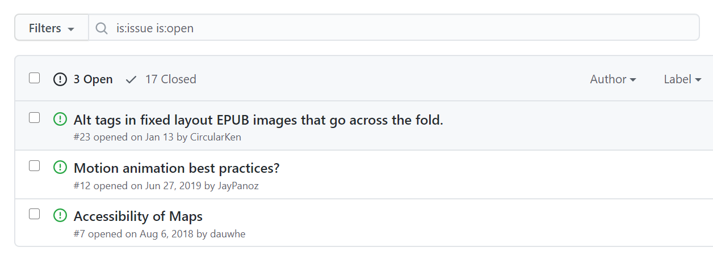
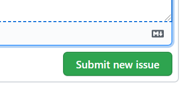

Accessible Publishing Knowledge Base
Accessible Publishing Knowledge Base
Reporting Issues
Error Reports
Although we endeavour to keep this site as up to date as possible, even the best of sites will have some bugs. If you spot any typos, factually outdated or incorrect information, formatting errors, or similar problems, please report the issues so we can correct the problems.
The source pages for the knowledge base are maintained in a GitHub repository, as GitHub provides both an issue tracker and a history of changes. To report problems with the content and display, simply open a new issue and describe the problem and what page(s) it occurs on.
If you are not familiar with GitHub, the following steps will guide you through the process of opening a new issue:
Note
A free GitHub account is required in order to open new issues.
-
Go to the "Issues" tab in GitHub repository for the Accessible Publishing Knowledge Base.

-
Check the open issues and/or try some keyword searches to verify that the issue has not already been reported.

Note that the filter box for searching open issues is automatically populated with the keywords "
is:issue is:open" to limit the results to only open issues. Leave these keywords alone and add the term(s) you are looking for after. -
If a matching issue is not found, click on the "New issue" button beside the filter box to open a new one.

-
GitHub will open a new page with an empty form for submitting the issue. The first step is to create a short title that meaningfully conveys the issue.

-
Next, write a more detailed description of the issue. You can include a proposed resolution if you have one.

For display problems, please identify the browser and operating system you are using.
-
Finally, click the "Submit new issue" button at the bottom of the form to submit the issue.

Although we will attempt to fix all serious factual errors as soon as possible, you may not receive feedback right away for less serious issues. Please understand that we will attempt to resolve all issues in as timely a manner as we can. Your feedback is appreciated!
By default, GitHub will email you a copy of any comments made on your issue, so you do not need to check the site to track its progress.
Note
Advanced GitHub users are encouraged to submit pull requests directly for obvious mistakes. There is no need to open a separate issue.
New Topic Requests
In addition to reporting bugs, we also welcome requests for new topics for the knowledge base to cover. We are always trying to expand on the list of topics covered, but publishing is a dynamic field and there may be accessibility issues with content that is not yet on our radar.
If you have a suggestion for a new page (or set of pages), please follow the same process for bug reports.
Before opening a new request, try searching the site for the topic you intend to suggest. The issue may already be covered. If the location of the information is confusing, please feel free to suggest this, as well.
Note
The issue tracker is not a help forum. Although advice will be offered if general questions are asked, answers cannot be guaranteed in a timely manner.